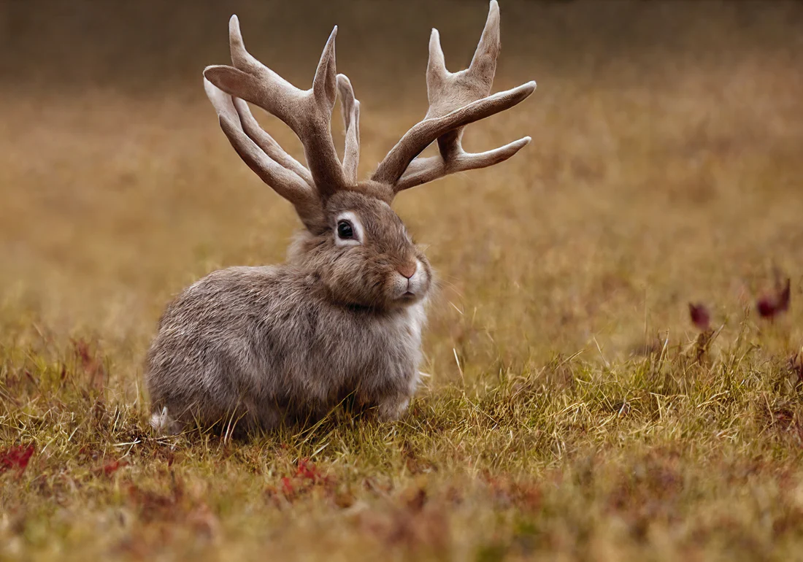

The jackalope is a mythical creature depicted as a hare or rabbit with antelope-like horns. It is a staple of American folklore, particularly in the western United States. Jackalopes are renowned for their elusive nature and are said to inhabit remote wilderness areas, evading capture with their extraordinary speed and agility. In folklore, encountering a jackalope is considered both rare and fortunate, with sightings often heralding good luck or adventure.
